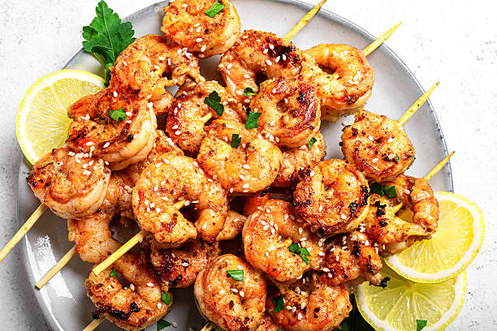

Grilled Garlic and Herb Shrimp

Juicy and delicious grilled shrimp.
You can grill the shrimp on skewers if you prefer. Every time I make these I have people begging me for the recipe!
These succulent grilled shrimp are simple to make for a delicious summer cookout. Try this mouthwatering grilled shrimp recipe made with brown sugar, basil, and a host of Italian seasonings for an irresistible seafood experience.
Grilled shrimp can be refrigerated and enjoyed for three to four days. Place cooked shrimp in an airtight container or wrap them tightly in plastic for best results.
You will need:
- Ground paprika
- Minced garlic
- Italian seasoning
- Fresh lemon juice
- Olive oil
- Ground black pepper
- Dried basil leaves
- Brown sugar
- Large shrimp
- Whisk paprika, garlic, Italian seasoning, lemon juice, olive oil, pepper, basil, and brown sugar together in a bowl until thoroughly blended.
- Stir in shrimp and toss to evenly coat with the marinade. Cover and refrigerate at least 2 hours, turning once.
- Preheat an outdoor grill for medium-high heat. Lightly oil grill grate, and place about 4 inches from heat source.
- Remove shrimp from marinade, drain excess, and discard marinade.
- Place shrimp on preheated grill and cook, turning once, until opaque in the center, 5 to 6 minutes. Serve immediately.